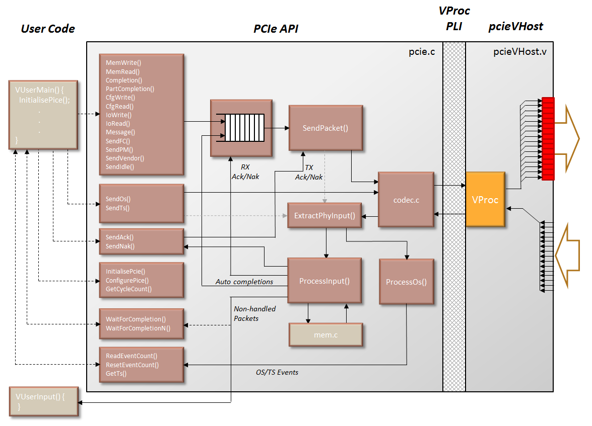

PCIe Virtual Model Test Component
Contents
SummaryThis model of a PCI Express host (with some endpoint features) is based on the Virtual Processor (VProc) model (see VProc documentation), with a PCIe API sitting atop the VProc's PLI API. In summary, the model provides the following features:
The root directory for the PCIe model is pcieVHost/, with C source in src/ and the main verilog in the verilog/ directory. The package is available for download on github. The C source code files are:
The verilog files, under verilog/, are:
In addition to the pcieVHost and PcieDispLink files, an example test environment is provided in the package, and these have files in the verilog/test/ directory. In here is the top level test file (test.v) and a display control component (ContDisps.v). User code to run on the pcieVHosts is supplied as VUserMain0.c and VUserMain0.c, in the verilog/test/usercode/ directory. a makefile is also provided in the test directory which builds everything needed to compile and run on ModelSim. VerilogThe verilog module simply maps 16, 10 bit registers, connected to the module output pins, into the VProc address space for writing, and the 16, 10 bit module inputs returning read data in the same address space (returned during both reads and writes). Additionally, three write only locations are provided for invoking $stop, $finish and `deaf. Two read locations give access to the modules node number and lane width parameter. An additional paramater can configure the pcieVHost as an endpoint. What this actually means is that it has some memory is put aside for a configurations space (unitialised) that can be written to over the link via a config write, and will generate completions to config reads, with the contents of this memory. This arrangement gives full control to the software for both outputing PCIe 10 bit codes on the configured number of lanes, as well as access to raw 10 bit input data. Although some amount of encoding and decoding could have been done in verilog (e.g. 10 bit codec, scrambling, physical layer framing etc.) this has been avoided to give maximum control to the VProc software, enabling for greater flexibility and visibility for generating and detecting exception cases. In order to ease construction of test software, however, an API is provided for the generation and processing of PCIe data. This, effectively, constitutes the model and is described in detail in later sections. The module definition for the model simply gives a clock and reset input, and the 16 lane input and output 10 bit wide links:
module PcieVhost (Clk, notReset,
LinkIn0, LinkIn1, LinkIn2, LinkIn3,
LinkIn4, LinkIn5, LinkIn6, LinkIn7,
LinkIn8, LinkIn9, LinkIn10, LinkIn11,
LinkIn12, LinkIn13, LinkIn14, LinkIn15,
LinkOut0, LinkOut1, LinkOut2, LinkOut3,
LinkOut4, LinkOut5, LinkOut6, LinkOut7,
LinkOut8, LinkOut9, LinkOut10, LinkOut11,
LinkOut12, LinkOut13, LinkOut14, LinkOut15);
PCIe API CodeThe PCIe API software constitutes a set of functions for generating any arbitrary ordered sets, training sequences, data link layer packets or transaction layer packets. Means are provided for constructing a set of packets for transmission before presenting to the output to enable concatenation of packets at the lane level. The input is constantly sampled, and packets extracted and passed to a central processing function. Also, the model has an internal memory space which memory write and read requested get targeted at, and any completion response required gets automatically generated. This can be disabled at initialisation so that memory reads and writes get passed to user code. When disabled, it is up to the user code to generate the appropriate completion, using the Completion() API function (see below).

For user generated output data there are two classes of functions available: Those that are queued (e.g. MemWrite() as shown in the top of the left most boxes in the above diagram), and those that output immediately. All user generated output calls go via a function SendPacket() except those functions in the box that includes SendIdle(). The queued user calls all have the option of adding to the queue and sending to the output, or of simply adding and returning immediately to the user code for other additions to the queue. The queue is of arbitrary length, and so, potentially, any sequence can be built up as a contiguous set of packets before presenting to the output. The SendPacket() and the three other direct user functions all call Encode() in codec.c (as shown in the diagram as the right most box of the PCIe API), which performs the 8b/10b conversion and uses an internal function (ScrambleAdvance()) to scramble the data before issuing it to the PCIeVHost verilog via the VProc API. At each clock the function ExtractPhyInput() samples the lanes, and starts to build up packets as they arrive. When it has a whole packet, it calls ProcessInput(). What this does with the packet depends on the received packets type. If it is a memory request, it will access the memory functions in mem.c. Memory writes are then completed. For reads however, a read completion packet is constructed and added to the output queue. Every received packet requires an acknowledgement. ProcessInput() checks the CRC and flags to SendPacket() that either an Ack or Nak is waiting. Since SendPacket() may be busy outputing another packet from the queue, the Ack or Nak is delayed until the next packet boundary. ProcessInput() also receives Acks and Naks for the packets that the model sent out, and these are used to modify the code that controls the queue, such that Naks cause the 'send pointer' to jump back to previously sent packets, whilst Acks cause the head of the queue to move forward and the Acked packets to be deleted from the queue. The only exception to this is that DLLPs are also sent to the output via the queue (again this is so that arbitrary sequences may be built up), but when the send point passes over a DLLP it is removed from the queue immediately. Two other important functions are provided to the user: InitialisePcie() and WaitForCompletion(). The first must be called before attempting to use any other user outputing functions, and initialises the model. A pointer to a callback function is passed to InitialisePcie() for passing up received packets. The second function is a method for stalling the user code until a completion has arrived at the input. A completion does not have to be waited for immediately, and multiple requests can be issued before being a corresponding wait is called. Other functions are also available for adjusting the model, and are described more fully below. User Output GenerationMost of the user output functions have a similar set of parameters. (See Summary of API Functions below). The TLP generation functions all have an address, length (in bytes), tag, requestor ID (rid), queue status and node number. The write functions also have a pointer to the data. The Completion() functions also requires a status and byte enables (for when a split completion is to be generated), as well as the completer's ID. For completions without a payload, the address, byte enables and length are all set to 0, and the data pointer set to NULL. A sister function to Completion exists called PartCompletion(). This is almost identical, but has an addition rlength argument (remaining length) used to calculate the header byte count, which may include additional bytes not present in the completion, for generation of multiple completions. Valid staus value for the completion functions are:
Both the completion digest functions have a 'delay' equivalent, with a boolean delay argument for the part-completion function, added to control whether the completion is added to the normal queue, or whether it is added to a special delayed queue. The CompletionDelay() function always has the delay, queue and digest flags active. The delay is controlled by user configuration, via CONFIG_CPL_DELAY_RATE and CONFIG_CPL_DELAY_SPREAD (see Model Initialisation and Configuration). All the output functions have a 'digest' equivalent. These are basically the same functions, but with an extra 'digest' parameter to control whether the resulting generated packets have a digest (ECRC) word. The output functions also return a pointer to the packet data generated by the function. This pointer is only valid if the functions are called with the 'queue' parameter set to QUEUE. If set to SEND then NULL is return, since it cannot be guaranteed that the allocated memory containing the packet has not been freed. With a valid pointer returned, the user code has an opportunity to modify the packet (e.g. to deliberately corrupt it) before calling SendPacket() to flush the packet onto the link. The SendMessage() function replaces the address with the message code, and the DLLP functions have less parameters, and are specific to the DLLP type. As mentioned previously, the output functions available to the user code are divided into two categories; queued and non-queued. In addition (hidden from the user code), the functions are also divided by another category, namely template generated or non-template generated. All the queued functions are also templated, but additionally SendAck() and SendNak() also use templates. TemplatesWithin pcie_utils.c are two local functions for generating templates for output packets; CreateTlpTemplate() and CreateDllpTemplate(). A set of parameters are passed into to configure the header, and the function allocates some memory, adequate for the size of the packet, and fills in some default values, as well as the specified parameters. They return a pointer to allocated space, and also, for convenience, a pointer to the start of the data portion of the packet (the byte after the header). Output Function StructureEach of the user output functions call the appropriate CreateTemplate function and modifies the defaults if required, and calculates the CRC(s). The pointer for this completed packet is then added to an entry of a structure which the function has created, again by requesting some space in memory. This 'packet type' structure (Pkt_t) then consists of the pointer for the packet data, an assigned sequence number, and a, as yet, unassigned 'next point' used for constructing the linked list output queue. A TimeStamp field is also defined, which is used only on incoming packets (see below). The Pkt_t structure is shown below:
typedef struct pkt_struct *pPkt_t;
typedef struct pkt_struct {
pPkt_t NextPkt; // pointer to next packet to be sent
PktData_t *data; // pointer to a raw data packet, terminated by -1
int seq; // DLL sequence number for packet (-1 for DLLP)
uint32 TimeStamp;
} sPkt_t;
The packet is now ready for adding to the queue, and the output function calls AddPktToQueue(), to place it on the output queue. When the user called the output function, a flag queue was passed in. If set, the function returns after the packet has been added. If not set, then the newly added packet, along with any previously unsent packets on the queue, are sent to the output by calling SendPacket(). This basic operational structure is common to all the output functions except SendAck() and SendNak(). Sending of Acks and Naks are not queued because it is not always desirable to send an Ack/Nak for every single packet sequence. The PCI Express specification allows Acks to accumulate such that and Ack of a given sequence number implies an Ack for that sequence number and all as yet unacknowledged packets. Since the transmission of Acks can be held up if SendPacket() is busy, the SendAck() and SendNak() functions keep track of what Ack is pending to send, and SendPacket() samples this in between the sending of packets (or when idle) and sends whatever acknowledge is indicated in the cycle. The functions still create a template for the Ack, but if an ack is superseded, the old packet is discarded within the Send functions and a new one created. The SendAck() and SendNak() functions are usually only called by the ProcessInput() function, but they may also be called from the user code if, for instance, an acknowledge error condition is required, or the user has disabled auto-ack generation. However, calling SendAck() or SendNak() does not guarantee that an acknowledge is sent immediately, but only updates the internal state of pending ACK/NAK sequence. Output QueueThe output queue is a linked list of 'packet types' (Pkt_t) which is managed via three pointers: head_p, send_p and end_p. As one would expect, head_p always points to the first unacknowledged packet. The send_p pointer always points to the next packet to output, and end_p points to the last packet in the queue. When AddPktToQueue() is called the packet pointed to by end_p has its NextPtr field (which would be NULL) set to point to the new packet, and end_p is updated to also point to the new packet. When SendPacket() is called each packet is output, with send_p traversing the linked list from its starting point until it hits the NULL NextPtr of the end packet. The send_p pointer can be modified, however, if a packet receives a Nak. In this case send_p is set to the head of the queue, and traverses the list until it points to the packet with the same sequence as the Nak. The head_p pointer remains fixed until a successful acknowledge is received. The head_p pointer the traverses the list to one beyond the ack sequence (which could be NULL if all packets acknowledged). One deviation from the above procedure occurs. Most DLLPs are also placed on the queue, but aren't acknowledged and mustn't be resent. When the send_p passes over a DLLP it must be removed from the queue. The DLLP may be at the head of the queue, in which case head_p must move forward one, at the end of the queue, in which case end_p must move back one, or in the middle, in which case the NextPtr of the previous packet must be set to point to the packet after the DLLP. In all cases of a packet being removed from the queue, either an acknowledged TLP or a sent DLLP, at that point the memory allocated for the packet is freed so as to prevent a memory leak. Non-packet OutputThe three functions SendIdle(), SendOS() and SendTS() are used to send output that is not within a packet, and is, indeed, sent linearly within the lanes, rather than striped across them. In order for input to be processed correctly, and to correctly comply with output requirements, something must be sent at all times, allowing SendPacket() to fetch the input state and send it to ExtractPhyInput(). The SendIdle() function is used to do this, and can be called with a 'tick' count to indicate for how long it is required to be idle. Also, if WaitForCompletion() has been called this implicitly calls SendIdle() whilst it is waiting on the completion event. Ordered sets and training sequences can only be sent in between packets, but so long as a SendPacket() has been issued before calling them (i.e. queue is false on the last call to an output function) then this will be safe. Input processingExtracting Data From The Input LinkThe input links are constantly sampled, each and every time something is output. Since there is always something output (even if just Idle bytes), the input is sampled every symbol time. As can be seen from the diagram, output only comes directly from two sources—either SendPacket(), or the group of low level output functions (SendIdle(), SendTS() and SendOS()). All these functions extract the returned 10 bit word from the input lane as it writes to the corresponding output lane, and places it into an array (LinkIn). At the end of the sweep across the lanes, ExtractPhyInput() is called, passing in the input array with the new input codewords. ExtractPhyInput() decodes the 10bit words, and monitors for new TLP or DLLP packets. When an STP or SDP is seen, some memory space is allocated for a maximum size packet. This spaced is filled with the incoming data until and termination symbol (END or EDB) is encountered. At this point, the memory is reallocated to reduce to the actual size of the packet. A new packet type structure is created, with a filled in sequence number extracted from the header, and the entire packet is passed to ProcessInput(). Input Packet ProcessingAll packets are processed through ProcessInput(). If the packet is a DLLP, it is CRC checked, then its type is tested and processed internally to ProcessInput() if its an Ack or flow control type. Automatic processing of acknowledges can be disabled via ConfigurePcie(), in which case the DLLP is sent to the user registered function (if any). For internally handled acknowledges the curr_ack or curr_nak sequence numbers are updated, and at the next call to SendPacket() any acknowledged packets are deleted from the head of the queue, or NAK'ed packets resent by updating the send pointer to include the lowest sequence NAK'ed packet. When acking is disabled, packets are deleted from the queue immediately they are sent and it is the responsibility of the user to resend packets that have been NAK'ed. For the flow control DLLPs the appropriate FlowCntlDataCredits and FlowCntlHdrCredits counts are updated, which are used to stall the sending of packets when appropriate. Like acknowledges, flow control may be disabled via ConfigurePcie(), in which case all flow control DLLPs are sent to the user registered function, and the user code must manage throttling of packets. All other DLLPs are not supported and generate a warning upon receipt. Transaction layer packets are first checked for good CRC(s), and then handled depending on the type. Memory read or write requests access the internal memory (via functions in mem.c) when memory is enabled, whilst completions increment a completion count (used by WaitForCompletion()—see below) and, if a user function has been registered, is passed to the user code for further processing. Also, packets with failing CRCs, are also passed to the user function, for stats gathering, scoreboarding etc., though the user function may also choose to do nothing with them. All other TLP types are unsupported (presently) and generate a warning message, and get passed up to the user function (if registered). The user function, when finished processing returned packets, must free the memory of the packet to prevent a memory leak. A macro is provided to do this function—DISCARD_PACKET(_PKT). The packets passed to the user registered input function will have the TimeStamp field of the Pkt_t structure filled in with the clock cycle it was processed. This is useful if user code wishes to implement delaying of responses to these packets by comparing the TimeStamp with the current cycle time (accessed using GetCycleCount()). If, when internal memory is enabled, a memory read request is processed, ProcessInput() generates a read completion packet, which is added to the output queue for transmission. It calls the user API function Completion() to do this. If memory is disabled, it is up to the user code to generate any completions. All the TLP packets generate an acknowledge after the CRC has been checked, with ProcessInput() calling either the user API functions SendAck() or SendNak() as appropriate. Automatic acknowledging can be disabled, however, via ConfigurePcie(), in which case the user code must generate the acknowledges as appropriate. All packets passed to the user callback function are 'whole', in that they contain a flat data structure containing unprocessed physical layer packets (though 8b/10b decoded). In order to extract useful information from the packet as series of macros are provided in pcie.h, which take a packet pointer and 'return' a value. Below are shown the currently supplied macros for TLP packets.
// Extract header fields
GET_TLP_TYPE(_PKT)
GET_TLP_LENGTH(_PKT)
GET_TLP_FBE(_PKT)
GET_TLP_LBE(_PKT)
GET_TLP_TAG(_PKT) // Not Completions
GET_TLP_RID(_PKT) // Not completions
GET_CPL_TAG(_PKT) // Completions only
GET_CPL_BYTECOUNT(_PKT) // Completions only
GET_CPL_CID(_PKT) // Completions only
GET_CPL_STATUS(_PKT) // Completions only
GET_TLP_ADDRESS(_PKT) // Get address as 64 bit number (even if 3DW header)
GET_TLP_PAYLOAD_PTR(_PKT) // Return a pointer to the start of the payload
// Return status
TLP_HAS_DIGEST(_PKT) // True if an ECRC present (TD bit set)
TLP_HDR_4DW(_PKT) // True if a 4DW header type
TLP_IS_POSTED(_PKT) // True if packet is a posted request
Bad, as well as good, packets are passed to the user registered callback function, and their status is passed in as the second argument. The value is a bit field indicating different error status types in each bit. The currently supported status bits, as defined in pcie.h, are as follows:
Link TrainingA couple of high level functions are provided in the pcieVHost API, which can be used to do initial link training and flow control initialisation. These are not meant to be full implementations, covering all exceptions and eventualities, but can be used to go from a cold start, power up to L0 state, and set initial flow control values for P, NP and Cpl packets. The example test environment instantiates two pcieVHost modules back-to-back, and calls these API functions from the two test programs to do just this. To go from a 'Detect' state to 'L0' state, the users program must call InitLink(). In addition to the node argument (common to all API functions) a linkwidth argument is required. This is not left to a default value, as it is essential that the training sequence matches the actual linkwidth that exists on the pcieVHost that the program making the call is running from. Other parameters can be set separately with ConfigurePcie() (see Model Initialisation and Configuration section), which can be left to default values if required, or configured to different settings. CONFIG_LTSSM_LINKNUM defaults to 0, which is a likely scenario, but this can be updated to be between 0 and 255. The number of fast training sequences set with CONFIG_LTSSM_N_FTS, defaults to 255, and has the same range as the link number. The five bit training sequence control field, for hot resets, loopbacks scrambling control etc., can be set via CONFIG_LTSSM_TS_CTL. The LTSSM function has abbreviated sequences, due to the time required for some steps (e.g. 24ms). The detect state timeout can be updated with CONFIG_LTSSM_DETECT_QUIET_TO. Its units are in clock cycles. The CONFIG_LTSSM_ENABLE_TESTS and CONFIG_LTSSM_FORCE_TESTS configuration types control certain useful test behaviours of the LTSSM. The difference between the enable and force configurations is that the enable will only do the behaviour on average once in every three iterations, whereas a force enables the feature constantly, and thus overrides any equivalent enable setting. The configuration settings are a bit mask, with supported values as listed below:
The ENABLE_DISABLE setting enables/forces going to the 'Disabled' state from configuration start. The ENABLE_COMPLIANCE bit forces/enables going to polling compliance when entering polling state, instead of polling active. Finally, ENABLE_LOOPBACK force/enables going to 'Loopback' state from configurations start. Use of these controls is at the discretion of the user, as setting them interrupts the transition from 'Detect' to 'L0' states. Once a link has been trained, and reached state L0, the initialisation of flow control values over the link can be set with a call to InitFc(). The values advertised are configured via ConfigurePcie(), with relevant types CONFIG_<type>_HDR_CR and CONFIG_<type>_DATA_CR, with <type> being one of POST, NONPOST or CPL. Auxiliary FunctionsWaitForCompletion(), which simply has a node input argument, is used for stalling the user code until such time as a completion has been seen. It effectively tests a count (CompletionEvent) which, if zero, will stall in the function, sending out idles, until the count is non-zero. The count is then decremented by the function. With this arrangement, multiple packets (with completions) can be output before waiting on a return. If, at a later time, a wait is called and type count is already non-zero, the WaitForCompletion() simply drops through, decrementing as it goes. To wait for multiple completions to occur at the same point in the user code, WaitForCompletionN() is called with the required number completion events as its first argument. It should be noted that the WaitForCompletion() function is stalling on a whole completion. That is to say, if the completer returns completion data as multiple completions for the same tag, only the final completion increments the event count. It is up to the user registered input function to process multiple completions, and keep track of earlier partial comepletion, ready for use by the VUserMain flow. Internal Memory AccessThe PCIe model's internal memory may be accessed from user code (VUserMainN() etc.) To write to the memory WriteRamByteBlock() is used. This takes a 32 bit aligned address, a pointer to a PktData_t buffer containing bytes, a first and last byte enable (4 bits each) and a byte length which is a multiple of 4 bytes. If it's required to write data not aligned to 32 bits, then the byte enables are used, but the data buffer will start at the 32 bit aligned address and must be padded in the disabled byte positions. To read back data, a similar call (ReadRamByteBlock()) is made, with the same arguments as WriteRamByteBlock(), but without the byte enables. ReadRamByteBlock() returns 0 on successfully reading from memory, but returns non-zero if there was an error, such as reading an uninitialised block. In the error case no data is returned, and the buffer remains unchanged. Some simpler functions are provided for individual byte and word reads and write (see Summary of API Functions for a list of these functions). These return a data value of 0 for accesses to uninitialised memory blocks. Model Initialisation and ConfigurationA single function provides all the initialistion required by the model. InitilisePcie() must be called from the user code before any other API function call is made. It has only two arguments, the first of which allows registration of a user function to be called whenever a completion type packet is received at the input (e.g. read completion, configuration write completion, etc.). The user function is responsible for handling these packets, though they will have been CRC checked and are always delivered valid. This argument may be NULL if it is not required to process these packets. The second argument is the VProc node number of the program. The model works 'out of the box' as it were, but may be configured, either immediately after initialisation or at future points during simulation. Only one function is used to provide all configuration access; ConfigurePcie(). Its first argument is a 'type' selecting which parameter is to be altered and the second is an integer value. Some types do not require value, in which case the value argument is a 'don't care' (so usually set to 0 or NULL). A list of valid types, and whether requiring a value, is given below.
Structure of a User ProgramThere are many ways that a user program could be constructed to utilise the PCIe model, but there are some common components that would feature in any implementation, which are discussed now. Below is shown an example outline of a basic VUserMain program for the model:
#include <stdio.h>
#include <stdlib.h>
#include "pcie.h"
#define RST_DEASSERT_INT 4
static int node = 0;
static unsigned int Interrupt = 0;
static int ResetDeasserted(void)
{
Interrupt |= RST_DEASSERT_INT;
}
static void VUserInput(pPkt_t pkt, int status, void* usrptr)
{
/* ---- User processing of received packets here ---- */
DISCARD_PACKET(pkt);
}
void VUserMain0()
{
VRegInterrupt(RST_DEASSERT_INT, ResetDeasserted, node);
InitialisePcie(VUserInput, node);
do
{
SendOs(IDL, node);
}
while (!Interrupt);
Interrupt &= ~RST_DEASSERT_INT;
InitLink(16, node);
InitFc(node);
/* ---- User calls to packet generation functions here ---- */
SendIdle(100, node);
VWrite(PVH_FINISH, 0, 0, node);
}
The above code assumes that the PCIe model is configured at node 0. The call to VRegInterrupt() connects the callback function ResetDeasserted() to the reset interrupt so that we can wait until after reset is removed, whilst the InitialisePcie() sets up the model for this node and registers VUserInput() as the callback for unhandled packets. With no link training startup code, the program simply outputs IDL ordered sets (SendOs()) until reset is deasserted. A link initialisation is instifated with a call to InitLink(), followed by Flow control initialisation with InitFc(), and then the model is ready to go. If either link initialiasation or configuration needs non-conformant sequences, or different values for testing, etc., the the calls to these functions can be skipped, and replaced with user code to output different patterns as required. At this point other user functions may be called to implement behaviour, or the user code simply inserted directly into VUserMain(). At its simplest, the user code would normally be calls to MemRead(), MemWrite() and Completion() (or possibly PartCompletion() if the completion must be split). Also CfgRead() and CfgWrite() if config space accesses are required. The WaitForCompletion() function would be used for synchronising of returned data to non-posted requests. Some of the details of the API calls could be tidied away in user data hiding modules, so that requestor ID, node number etc. are not visible to the user's main program code. With the model configured to its default, the VUserInput() should only ever be called with corrupted packets. To receive all transaction layer packets ConfigurePcie() is called just after InitialisePcie() with CONFIG_DISABLE_MEM to pass up memory reads and writes, and with CONFIG_DISABLE_UR_CPL to receive unsupported packet types. All data link layer packets are handled automatically by default, so CONFIG_DISABLE_FC and CONFIG_DISABLE_ACK can be used to receive these. In this way the user code can choose what level of handling it wishes to implement, be it its own memory model, error reporting or link protocol handling. The user code may be an infinite loop, if required, but if it ever returns it is possible to terminate, stop or `deaf the simulation from within VUserMain() using a low level VProc call. In the example, idles are sent for a short time to flush the link, especially for PcieDispLinks, and then a VProc write (VWrite()) to an address 'PVH_FINISH' terminates the simulation. Two other addresses (PVH_STOP and PVH_DEAF) perform the equivalent functions. As has been mentioned elsewhere, VUserMain() and the callback function (VUserInput()) are not running in separate threads, and so it is safe to share memory between them. If a user program instigates new threads, however, care must be to avoid race conditions and contentions between transmitter and receiver code, and the model's API thread. E.g. it is hazardous to call API code from a separate thread to VUserMain(), and proper resynchronisation should be employed. Summary of API FunctionsTLP Output Functions
pPktData_t MemWrite (uint64 addr, PktData_t *data, int length, int tag, uint32 rid, bool queue, int node);
pPktData_t MemRead (uint64 addr, int length, int tag, uint32 rid, bool queue, int node);
pPktData_t Completion (uint64 addr, PktData_t *data, int status, int fbe, int lbe,
int word_length, int tag, uint32 cid, uint32 rid, bool queue, int node);
pPktData_t PartCompletion (uint64 addr, const PktData_t *data, int status, int fbe, int lbe, int word_rlength, int word_length,
int tag, uint32 cid, uint32 rid, bool queue, int node);
pPktData_t CfgWrite (uint64 addr, PktData_t *data, int length, int tag, uint32 rid, int queue, int node);
pPktData_t CfgRead (uint64 addr, int length, int tag, uint32 rid, bool queue, int node);
pPktData_t IoWrite (uint64 addr, PktData_t *data, int length, int tag, uint32 rid, bool queue, int node);
pPktData_t IoRead (uint64 addr, int length, int tag, uint32 rid, bool queue, int node);
pPktData_t Message (int code, PktData_t *data, int length, int tag, uint32 rid, bool queue, int node);
pPktData_t MemWriteDigest (uint64 addr, PktData_t *data, int length, int tag, uint32 rid, bool digest, bool queue, int node);
pPktData_t MemReadDigest (uint64 addr, int length, int tag, uint32 rid, bool digest, bool queue, int node);
pPktData_t CompletionDigest (uint64 addr, PktData_t *data, int status, int fbe, int lbe,
int word_length, int tag, uint32 cid, uint32 rid, bool digest, bool queue, int node);
pPktData_t PartCompletionDigest (uint64 addr, const PktData_t *data, int status, int fbe, int lbe, int word_rlength, int word_length,
int tag, uint32 cid, uint32 rid, bool digest, bool queue, int node);
pPktData_t CfgWriteDigest (uint64 addr, PktData_t *data, int length, int tag, uint32 rid, bool digest, bool queue, int node);
pPktData_t CfgReadDigest (uint64 addr, int length, int tag, uint32 rid, int digest, int queue, int node);
pPktData_t IoWriteDigest (uint64 addr, PktData_t *data, int length, int tag, uint32 rid, bool digest, bool queue, int node);
pPktData_t IoReadDigest (uint64 addr, int length, int tag, uint32 rid, bool digest, bool queue, int node);
pPktData_t MessageDigest (int code, PktData_t *data, int length, int tag, uint32 rid, bool digest, bool queue, int node);
pPktData_t CompletionDelay (uint64 addr, PktData_t *data, int status, int fbe, int lbe, int length, int tag,
uint32 cid, uint32 rid, int node);
pPktData_t PartCompletionDelay (uint64 addr, PktData_t *data, int status, int fbe, int lbe, int rlength, int length, int tag,
uint32 cid, uint32 rid, bool digest, bool delay, bool queue, int node);
void SendPacket (void);
DLLP Output Functions
void SendAck (int seq, int node);
void SendNak (int seq, int node);
void SendFC (int type, int vc, int hdrfc, int datafc, bool queue, int node);
void SendPM (int type, bool queue, int node);
void SendVendor (bool queue, int node);
Low Level Output
void SendIdle (int Ticks, int node);
void SendOs (int Type, int node);
void SendTs (int identifier, int lane_num, int link_num, int n_fts, int control, bool is_gen2, int node);
Low Level Input
int ResetEventCount (int type, int node);
int ReadEventCount (int type, uint32 *ts_data, int node);
TS_t GetTS (int lane, int node);
Link Training
void InitLink (int linkwidth, int node);
void InitFc (int node);
Miscellaneous Functions
void WaitForCompletion (int node);
void WaitForCompletionN (unsigned int count, int node);
uint32 GetCycleCount (int node);
void InitialisePcie (callback_t cb_func, int node);
void ConfigurePcie (int type, int value, int node);
void PcieRand (int node);
void PcieSeed (int seed, int node);
Internal Memory Access Function
void WriteRamByteBlock (uint64 addr, const PktData_t *data, int fbe, int lbe, int byte_length, uint32 node);
int ReadRamByteBlock (uint64 addr, PktData_t *data, int byte_length, uint32 node);
void WriteRamByte (uint64 addr, uint32 data, uint32 node);
void WriteRamWord (uint64 addr, uint32 data, int little_endian, uint32 node);
void WriteRamDWord (uint64 addr, uint64 data, int little_endian, uint32 node);
uint32 ReadRamByte (uint64 addr, uint32 node);
uint32 ReadRamWord (uint64 addr, int little_endian, uint32 node);
uint64 ReadRamDWord (uint64 addr, int little_endian, uint32 node);
void WriteConfigSpace (const uint32 addr, const uint32 data, const uint32 node);
uint32 ReadConfigSpace (const uint32 addr, const uint32 node);
Further Internal ArchitectureSome discussion of internal structure has already been made in the description of the API. In particular, SendPacket(), ExtractPhyInput() and ProcessInput(), as the main Tx/Rx processing routines. Further detail of the rest of the internal code is now given below. Other Internal FunctionsDescribed above are the main functions which comprise the PCIe model. In addition to these, however, are several other support functions not mentioned previously. These are listed now with a brief synopsis to aid navigation through the source code.
Internal Memory StructureThe PCIe model (optionally) supports memory access requests for the full 64 bit address space accessible by PCI Express transactions with an internal memory model. It does this with routines defined in mem.c, which initialise with no actual memory space allocated. As shown on the diagram, normally only ProcessInput() has access to the memory, and mem.c provides two functions for writes and reads—WriteRamByteBlock() and ReadRamByteBlock(). The user code has access to these functions, as well as some byte and word access hybrid versions. The full 64 bit space capability relies on the fact that a simulation run cannot possibly write to all 2^64 locations. Instead, the space is divided into 4K byte chunks which get dynamically allocated as required, and are accessed via references in a series of tables which further divided the address space. The starting point for a lookup is the PrimaryTable. This table has 4K entries, but maps all the top 40 bits of the address space into this space, using a simple hash, XORing the bits in a certain way and then bit reversing the 12 bit result. The PrimaryTable entry structure (PrimaryTable_t) has a valid field and an address for storing the top 40 bits of the address that hits on the location. If another address upper 40 bits hashes to the same location, then the index pointing to the table entry is simply incremented until an empty entry is found, or we searched the whole table (an error condition). The primary table entry also contains a pointer to a pointer, which references a secondary table, dynamically allocated when first written to. The secondary tables sub-divide the address space of the lower 24 bits of the address into the 4K byte blocks required. The upper 12 bits of the lower address index into the secondary table, whose entry points to a 4K byte block of memory, dynamically allocated on first access. Because PCI Express does not allow crossing of 4K boundaries within a transaction, there is never any need to access more than one memory block at a time for a given transaction. Reading from a location simply involves traversing the table. The top 40 bits of the read address are hashed, and index into the primary table. The Primary table entry address is compared with the read address 40 bits and, if different, the index is incremented until a match, an invalid address is encountered or the whole table is searched. The last two cases are an error condition. The secondary table is then accessed with the next 12 bits and (if pointing to a valid byte block), the lower 12 bits used to retrieved the data. At any point in the traverse, an unallocated table entry of byte block is considered a fatal error—it is not legal to access locations that have not be written. Internal Endpoint Configuration SpaceIf the pcieVHost is configured as an endpoint, it reserves a page, separate from the other internal memory, that can be accessed via the configuration read and write command over the PCIe link. In addition there are a couple of access functions, WriteConfigSpace() and ReadConfigSpace(), that allow local word (32 bit) access to this memory from the user programs. When not an enpoint, or if internal memory accesses is disabled, via PCIe Monitor (PcieDispLink)The PcieDispLink module is a verilog behavoural test component, that can be attached to the up and down links of the PCIe host model, and any connected test unit's PCIe link. The main purpose of the PCIe DispLink function is to provide logging data for activity on the PCIe link. It is a separate verilog component, rather than integrated into pcieVHost so that it can be used with other modules, such as some verification IP (VIP) and/or an implementation being tested or exercised. It is controlled by bits in the ContDisp.hex display control file, located in verilog/test/hex, (discussed shortly). A secondary function is to check the link for PCIe protocol violations, and report them to the log file. In this respect it is not an exhaustive protocol checker, with many compilance checklist features unsupported, and no coverage measurements. The ContDisp.hex file consists of a list of two numbers, the first being a hex number containing the control bits, followed by a decimal cycle number. The display output to the log from PcieDispLink is controlled by 4 bits. PCIe has three 'virtual' layers; transaction, data link and physical. Three bits in the ContDisp.hex vector enable display of the associated layer. These bits are defined as `DispTL, `DispDL and `DispPL respectively, defined in the file verilog/headers/pcidispheader.v. A fourth separate bit, `DispRawSym enables a display of all raw decoded symbol values. In addition to the four individual display controls, a `DispAll bit forces all to be displayed, including the extra raw lane data. Some control of the simulation is given by two more bits, `DispFinish, `DispStop, which activate $finish and $stop verilog system task calls. An example ContDisp.hex file, which enables the TL, DL and PL layers at time zero, and calls $finish at cycle 9999999999, is shown below:
// +8 +4 +2 +1
// ,--> 7 - 4: DispRawSym DispPL DispDL DispTL
// |,-> 3 - 0: unused DispStop DispFinish DispAll
// || ,-> Time (clock cycles, decimal)
// || |
70 000000000000
02 009999999999
Below are shown three sample sections of output with only the transaction layer on, then data link layer added and finally the physical layer. Transaction Layer OnlyPCIEU1: TL MEM read req Addr=130476dc48383000 (64) RID=0000 TAG=00 FBE=1111 LBE=1111 Len=002 PCIEU1: Traffic Class=0, TLP Digest PCIEU1: TL Good ECRC (fc9cae82) PCIED0: TL Completion with Data Successful CID=0008 BCM=0 Byte Count=008 RID=0000 TAG=00 Lower Addr=00 PCIED0: Traffic Class=0, TLP Digest, Payload Length=0x00000002 DW PCIED0: fedcba89 76543210 PCIED0: TL Good ECRC (af090c09) Transaction and Data Link LayerPCIEU1: DL Sequence number=11 PCIEU1: ...TL MEM read req Addr=130476dc48383000 (64) RID=0000 TAG=00 FBE=1111 LBE=1111 Len=002 PCIEU1: ...Traffic Class=0, TLP Digest PCIEU1: ...TL Good ECRC (fc9cae82) PCIEU1: DL Good LCRC (c235be07) PCIEU1: DL Ack seq 11 PCIEU1: DL Good DLLP CRC (5893) PCIED0: DL Sequence number=0 PCIED0: ...TL Completion with Data Successful CID=0008 BCM=0 Byte Count=008 RID=0000 TAG=00 Lower Addr=00 PCIED0: ...Traffic Class=0, TLP Digest, Payload Length=0x00000002 DW PCIED0: ...fedcba89 76543210 PCIED0: ...TL Good ECRC (af090c09) PCIED0: DL Good LCRC (eeed0266) PCIED0: DL Ack seq 0 PCIED0: DL Good DLLP CRC (b362) Transaction, Data Link and Physical Layer
PCIEU1: {STP
PCIEU1: 00 0b 20 00 80 02 00 00 00 ff 13 04 76 dc 48 38 30 00 fc 9c ae 82
PCIEU1: c2 35 be 07
PCIEU1: END}
PCIEU1: ...DL Sequence number=11
PCIEU1: ......TL MEM read req Addr=130476dc48383000 (64) RID=0000 TAG=00 FBE=1111 LBE=1111 Len=002
PCIEU1: ......Traffic Class=0, TLP Digest
PCIEU1: ......TL Good ECRC (fc9cae82)
PCIEU1: ...DL Good LCRC (c235be07)
PCIED0: {SDP
PCIED0: 00 00 00 0b 58 93
PCIED0: END}
PCIEU1: ...DL Ack seq 11
PCIEU1: ...DL Good DLLP CRC (5893)
PCIED0: {STP
PCIED0: 00 00 4a 00 80 02 00 08 00 08 00 00 00 00 fe dc ba 89 76 54 32 10
PCIED0: af 09 0c 09 ee ed 02 66
PCIED0: END}
PCIED0: ...DL Sequence number=0
PCIED0: ......TL Completion with Data Successful CID=0008 BCM=0 Byte Count=008 RID=0000 TAG=00 Lower Addr=00
PCIED0: ......Traffic Class=0, TLP Digest, Payload Length=0x00000002 DW
PCIED0: ......fedcba89 76543210
PCIED0: ......TL Good ECRC (af090c09)
PCIED0: ...DL Good LCRC (eeed0266)
PCIEU1: {SDP
PCIEU1: 00 00 00 00 b3 62
PCIEU1: END}
PCIED0: ...DL Ack seq 0
PCIED0: ...DL Good DLLP CRC (b362)
Two key points to note on the output; firstly, as each 'lower' layer is switched on, the layers 'above' are indented to make them easier to scan. Secondly, the up and down links are marked as PCIEU and PCIED respectively, along with the node number, allowing data to be extracted for one direction if desired. However, at the data link layer, acknowledge packets (Ack and Nak DLLPs) are associated with the opposite link from which they are issued, so they can be associated with the transaction which they refer to (i.e. their sequence number match). This is not true of completion data returning after a request, as this level effectively sits above the link. Protocol CheckingAs mentioned above, the PcieDispLink checking of PCIe protocols is not comprehensive, and should not be used as sign off criteria, where a third party 'VIP' module should be used. However, it does check many compliance checklist specifications, and a summary is given below.
In general terms, what is not covered is compliance with limitations set in the configuration space, ordering rules, and other 'higher level' considerations. Test EnvironmentIncluded in the package is an example test environment that connects two pcieVHost components back to back, and hooks up two PcieDispLink monitors to the up and down links. The configuration is shown in the diagram below. This example environment is simply meant to illustrate the usage of the various components, and how they are connected up. Two simple test programs VUserMain0() and VUserMain1() are written to exercise the PCIe link, with the VUserMain1 code being fairly passive, and various transaction types output from VUserMain0(). The whole environment is for a 16 lane interaface, and user wide lanes (i.e. unserialised 10 bit codes), for speed of simulation. The link displays have additional ports, apart from the link inputs and ContDisp control. The node number is 0 and 1, where this matches the node number of the pcieVHost's LinkOut—one for each host instantiated. The FwdName and BckName is a string—in this case "D" and "U", where each PcieDispLink has the opposite from its counterpart, with node 0 being the 'root', and its LinkOut being the downlink. The three other ports, LinkWidth, DisableScramble and InvertTxPolarity are set to constants, as shown. Obviously, in a proper test environment, these can be connected to state that reflects the expected settings if, for a given test say, scrambling were turned off, or the outputs inverted. DownloadThe pcieVHost is available for download on github. It uses the Virtual processing element VProc, which can also be downloaded from github. These two components must be installed with their own top level directories (VProc and pcieVHost) in a common directory, in order to work 'out of the box'. If the VProc component is located elsewhere, then update the VPROC_TOP variable in the two makefile files, located at pcieVHost/lib (for the C compilation) and pcieVHost/verilog/test (for the top level test simulation) to the appropriate location, either as an absolute path, or relative to the pcieVHost directories. Related DocumentsCopyright © 2016 Simon Southwell simon@anita-simulators.org.uk | |||||||||||||||||||||||||||||||||||||||||||||||||||||||||||||||||||||||||||||||||||||||||||||||||||||||||||||||||||||||||||||||||||||||||||||||||||